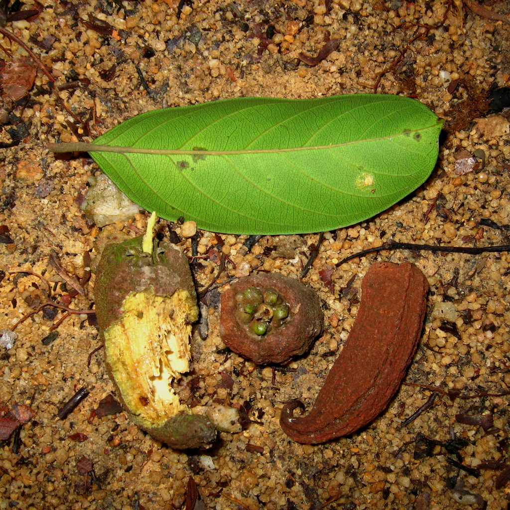

01Dipterocarpaceae · Genus 01
Vatica
Vatica is a genus of tropical Asian rainforest trees. Its members commonly produce resinous timber and fruits with enlarged, wing-like sepals.
Selected species: Vatica borneensis · Vatica flavida
Explore on iNaturalist ↗ Photo: Min Sheng Khoo / iNaturalist · CC BY-NC-SA